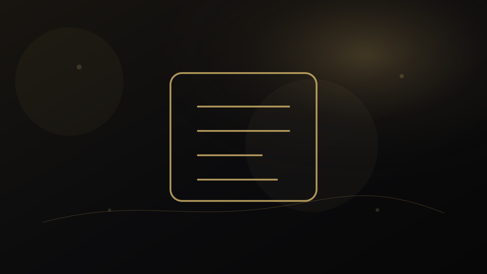

راهنمای پژوهش و انتشار
Academic CV چه تفاوتی با Resume دارد و کدام را برای موقعیت علمی بفرستیم؟
CV دانشگاهی و Resume هر دو سابقه حرفهای را نمایش میدهند، اما منطق انتخاب و سازماندهی اطلاعات در آنها یکسان نیست. اشتباه در انتخاب قالب میتواند شواهد علمی مهم را پنهان یا سند را بیش از نیاز طولانی کند.

Academic CV vs Resume را از خود مسئله شروع کنیم
CV دانشگاهی و Resume هر دو سابقه حرفهای را نمایش میدهند، اما منطق انتخاب و سازماندهی اطلاعات در آنها یکسان نیست. اشتباه در انتخاب قالب میتواند شواهد علمی مهم را پنهان یا سند را بیش از نیاز طولانی کند.
در این راهنما هدف ارائه نسخه آماده نیست. مسئله به اجزای کوچکتر تقسیم میشود تا معلوم باشد چه اطلاعاتی داریم، چه چیزی هنوز نامطمئن است و کدام نتیجه واقعاً از شواهد پشتیبانی میشود. این شیوه هم برای تصمیم انسانی مفیدتر است و هم از تبدیل یک شاخص یا یک تجربه به حکم کلی جلوگیری میکند.
پنج لایهای که در Academic CV vs Resume باید جداگانه دیده شوند
۱. هدف سند
CV برای نمایش سابقه علمی گسترده و Resume برای تناسب سریع با نقش مشخص طراحی میشود.
۲. طول
CV دانشگاهی میتواند چندصفحهای باشد؛ Resume معمولاً فشردهتر است.
۳. بخشها
انتشارات، تدریس، grants و service در CV اهمیت بیشتری دارند.
۴. تناسب
حتی CV کامل نیز باید با موقعیت مورد نظر اولویتبندی شود.
۵. نسخه مرجع
داشتن master CV و ساخت نسخههای هدفمند از آن خطا را کاهش میدهد.
اهمیت این تفکیک در آن است که دو مورد میتوانند همزمان درست باشند اما پیام یکسانی نداشته باشند. به همین دلیل، بهتر است پیش از جمعبندی، برای هر لایه مشخص کنیم «شاهد چیست؟»، «حد تفسیر کجاست؟» و «چه اطلاعاتی ممکن است نتیجه را تغییر دهد؟»
خطاهای رایج؛ چه چیزهایی کیفیت تصمیم را پایین میآورند؟
۱. فرستادن یک سند واحد برای همه فرصتها
این خطا معمولاً بخشی از اطلاعات را بیش از اندازه پررنگ میکند و امکان دیدن تصویر کامل را کاهش میدهد. راه بهتر این است که ادعا یا تصمیم به شواهد مشخص و محدودیتهای همان شواهد متصل شود.
۲. حذف شواهد علمی برای کوتاه کردن افراطی CV
این خطا معمولاً بخشی از اطلاعات را بیش از اندازه پررنگ میکند و امکان دیدن تصویر کامل را کاهش میدهد. راه بهتر این است که ادعا یا تصمیم به شواهد مشخص و محدودیتهای همان شواهد متصل شود.
۳. افزودن جزئیات شخصی نامرتبط با نقش
این خطا معمولاً بخشی از اطلاعات را بیش از اندازه پررنگ میکند و امکان دیدن تصویر کامل را کاهش میدهد. راه بهتر این است که ادعا یا تصمیم به شواهد مشخص و محدودیتهای همان شواهد متصل شود.
خطاهای بالا معمولاً از میل طبیعی ما به سادهکردن یک مسئله پیچیده میآیند. سادهسازی لازم است، اما نباید اطلاعاتی را حذف کند که اگر دیده میشدند، تصمیم یا تفسیر تغییر میکرد.
یک مسیر عملی برای حرکت از سؤال به اقدام
این مسیر عمداً مرحلهای است. اگر در یکی از مراحل شواهد کافی وجود ندارد، بهتر است همانجا توقف کنیم و اطلاعات تازه جمع کنیم تا اینکه با قطعیت ظاهری به مرحله بعد برویم.
چه زمانی کمک حرفهای معنا دارد؟
اگر مسئله به اطلاعات فردی، پرونده خصوصی، تحلیل تخصصی یا قضاوتی وابسته است که با مطالعه عمومی حل نمیشود، استفاده از خدمت حرفهای میتواند منطقی باشد. در مقابل، اگر پرسش عمومی است، مطالعه راهنماها و منابع رسمی باید نقطه شروع باقی بماند.
دستورالعمل هر فراخوان بر هر قاعده عمومی مقدم است.
پرسشهای متداول درباره Academic CV vs Resume
Academic CV vs Resume دقیقاً چه مسئلهای را حل میکند؟
این موضوع زمانی مفید است که به یک پرسش یا تصمیم مشخص متصل شود. CV دانشگاهی و Resume هر دو سابقه حرفهای را نمایش میدهند، اما منطق انتخاب و سازماندهی اطلاعات در آنها یکسان نیست. اشتباه در انتخاب قالب میتواند شواهد علمی مهم را پنهان یا سند را بیش از نیاز طولانی کند.
مهمترین خطا در Academic CV vs Resume چیست؟
یکی از خطاهای رایج، فرستادن یک سند واحد برای همه فرصتها است. کیفیت تصمیم زمانی بالاتر میرود که شواهد، محدودیتها و هدف استفاده از نتیجه روشن باشند.
چه زمانی کمک حرفهای برای Academic CV vs Resume معنا دارد؟
وقتی پاسخ به اطلاعات فردی، قضاوت تخصصی یا بررسی پرونده وابسته است و راهنمای عمومی برای تصمیم کافی نیست. دستورالعمل هر فراخوان بر هر قاعده عمومی مقدم است.
جمعبندی
Academic CV vs Resume زمانی بیشترین ارزش را دارد که مسئله، شواهد، محدودیت و اقدام بعدی از هم جدا باشند. نتیجه خوب لزوماً نتیجه قطعی نیست؛ نتیجهای است که بتوان توضیح داد چرا با اطلاعات فعلی قابل دفاع است و چه چیزی ممکن است در آینده آن را تغییر دهد.